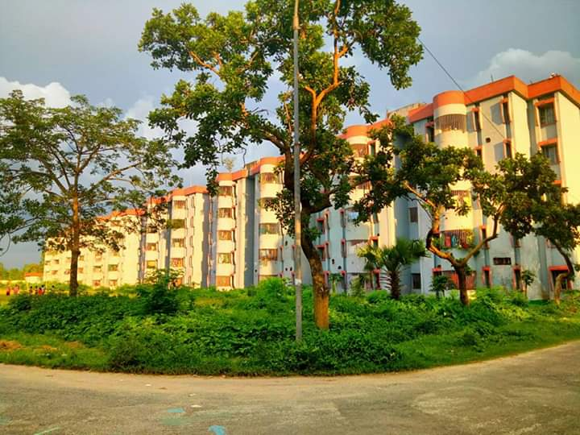

Jamuna Fertilizer Company LTD
Introduction
The Jamuna Fertilizer Company Limited (JFCL) is the largest enterprise of Bangladesh Chemical Industries Corporation (BCIC).Jamuna Fertilizer Company Limited(JFCL) has been established in 1991 and produces huge amount of urea.The plant is located in an area of 135 acres of land.This huge amount of area consists of plant area as well as housing coloy.
2/4

JFCL housing colony
3/4

JFCL central mosque
4/4
JFCL school and college
❮
❯
Production capacity of JFCL
The Jamuna fertilizer factory incurs a production loss of about 500 tones of urea a day due to less supply of gas, sources in the factory said.
As a result, urea supply to 20 districts including 16 northern districts and four districts in greater Mymensingh under the factory's command area may face short supply during the peak Irri-Boro season.
Jamuna fertilizer, the largest urea producing factory in the country, produced a record 5,20,000 MT urea in the last financial year (2007-2008) against its normal capacity of 5,00,000 MT.It is situated on the bank of the river Jamuna in the district of Jamalpur. Its urea production capacity is 1700 metric ton per day (MTPD) designed by SNAMPROGETTI and Ammonia production capacity is 1078 MTPD designed by HALDORTOPSOE of Denmark. The total plant infrastructure was constructed by Mitsubishi Heavy Industries Limited (MHI) of Japan. Bangladesh is an agrarian economy. In order to meet the increasing demand of food grain in the country. Fertilizer is one of the main inputs to agricultural sector. It is an essential prerequisite to increase food production. Bangladesh Chemical Industries Corporation (BCIC) is one of the biggest industrial organizations in the public sector under Ministry of Industries, Government of the Peoples' Republic of Bangladesh. BCIC is concerned with the setting of objectives, approval of budget, monitoring of actual performance and rendering expertise assistance for JFCL.
Management Policy of JFCL
The management of JFCL is under planning for implementation and to install computer in all business units. JFCL is planning to setup server in computer system department with local area network (LAN) facilities. The fertilizer company face the national and global challenges in business to survive. They have a plan for MIS system in cooperation of with BCIC. Therefore JFCL one million taka budget provision and introduced basic computer training program in-houseMd. Mofizur Rahman has Joined Jamuna Fertilizer Company Ltd.Md. Mofizur Rahman has Joined Jamuna Fertilizer Company Ltd (JFCL) an Enterprise of Bangladesh Chemical Industries Corporation (BCIC) as Managing Director on February 07, 2019.
Business Unit Of JFCL
In this study, business unit is considered where information is generated. The Chief Executive Officer of JFCL is Managing Director (MD). Under MD there are nine General Managers (GM). There are about 50 (fifty) sections/subsections under nine GMs. The names of division and sections i.e. business units are following:
- Office of the Managing Director.
- Office of the General Manager Administration:
Personnel Administration, Labour Section, Labour Welfare, School and College, Estate section, Transport section, CBA, Requirement Section and Common Service Section.
- Office of the Chief Medical Officer: Medical Centre.
- Office of the General Manager (Accounts and Finance):
General Accounts, Cost & Budget, Pay & Bill, Insurance, Tax and Audit, Cash & Bank, Store Accounts and Computer Section.
- Office of the General Manager Commercial:
Local Purchase, Foreign Purchase and Sales.
- Office of the General Manager MPIC:
General/Chemical Stores, Spares Parts Store and Material Planning and Inventory Control (MPIC).
- Office of the General Manager Technical:
Quality Cntrol, Fire & Safety, Process Engineering and Inspection, Research and Development, Technical documentation:-Technical Services & MIS, Technical Library, Photocopy and Cyclostyle, Book Binding, Training, Computer Lab.
- Office of the Chief Engineer MTS:
Machinery Maintenance, Plant Maintenance, Electrical Maintenance, Instrument Maintenance, Central Workshop, Solid Handling System Maintenance.
- Office of the Chief Engineer Construction:
Civil (Housing) and Civil (Factory).
- Office of the General Manager Operation: Urea Plant, Ammonia Plant, Utility Plant and bagging plant.
Urea Production And Manufacturing Process
Urea is a very important industrial production which is much used in agricultural field as a fertilizer because urea contains high percentage of nitrogen. Urea dissolves very well in water. Urea is called also as carbamide, which is an organic compound with chemical formula of CO(NH2)2. Urea is a white solid.
Urea molecular formula - CO(NH2)2
Urea is an amide compound and has two -NH2 groups connecting to the carbonyl group.
Manufacturing process of urea
Liquid ammonia is allowed to react with liquid carbon dioxide in a reactor at high temperature and pressure. The conditions employed are 130-1500C and a pressure of 35 atm. urea is formed in two-step reactions.
1.Ammonia and carbon dioxide reaction
Ammonia and carbon dioxide react together and give ammonium carbamate (NH2COONH4).
NH3+CO2=NH2COONH4
Fast, Exothermic , Go to completeness at industrial situations.
2.Ammonium carbamate to urea reaction
NH2COONH4=CO(NH2)2+H2O
Manufactured urea contains unreacted ammonia and carbon dioxide and ammonium carbamate. Ammonium carbamate is removed by reducing the pressure (Le Chatelier's Principle). When heating, ammonia and carbon dioxide is separated. The advantage of this process is ammonia and carbon dioxide can be recycled back to the process.
Urea is obtained as a solution, but that solution is concentrated to give 99.6% molten urea, and granulated for use for fertilizer.
Some Achievements Of JFCL
- Highest production of urea per day :1787.00 MT
- Highest production of amonia per day :1093.00 MT
- Highest bagging per day :3080.75 MT
- Highest days of factory running to produce amonia :315days
- Highest days of factory running to produce urea :118days